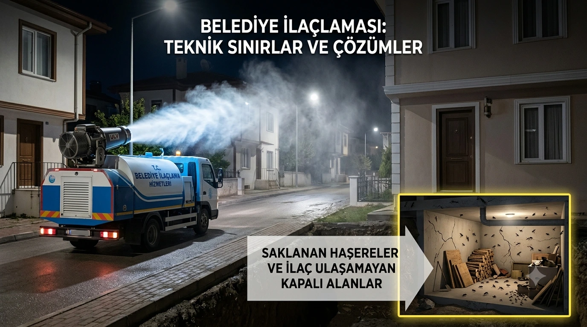

"Belediye İlaçlama Yaptı Ama Hâlâ Sinek Var" Şikayetinin Arkasındaki Gerçek
Birçok vatandaş, belediye ilaçlaması neden yetersiz kalıyor sorusunu kendine soruyor: belediye aracı mahalleden geçiyor, ama evin içi hâlâ sinek dolu. Bu durumun arkasında, belediyelerin ihmali değil, sokak ilaçlamasının doğası gereği taşıdığı teknik sınırlamalar yatıyor. Bu yazıda, bu sınırlamaları ve çözüm yollarını teknik bir perspektiften ele alıyoruz.
Neden 1: Belediye Aracı Sadece Sokağı İlaçlar, Eviniz İçeri Kapalı Kalır
Belediye araçları, yol kenarlarına, kaldırımlara ve havaya ilaç sıkar. Ancak özellikle "yakarca" (tatarcık) gibi haşereler, gündüzleri kapalı, kuytu ve karanlık alanlarda (bodrum katları, duvar boşlukları, kümes ve moloz yığınları) saklanır. Belediye aracının sıktığı ilaç, bu noktalara fiziksel olarak ulaşamaz. Bu durum, "sokakta uçan sinek sayısı azaldı ama evimde hâlâ var" şikayetinin temel nedenidir.

Neden 2: Zamanlama Uyumsuzluğu
Belediye aracı sokaktan geçtiğinde, henüz kapalı alanlarda saklanan haşereler sizin balkonunuza veya yatak odanıza girmiş olabilir. Sokakta uçan sinek sayısı azaldığında yapılan ilaçlama, hedef haşere o sırada başka bir noktada olduğu için etkisini sınırlı şekilde gösterebilir.
Neden 3: Sivrisinek ile Karasinek/Yakarca Mücadelesi Farklı Stratejiler Gerektirir
Belediyelerin yaptığı sokak ilaçlaması (ULV / soğuk sisleme), sivrisinek mücadelesinde kısmen etkili olsa da, sivrisinekler sokaktaki su birikintilerinde ürer ve sokakta uçar — bu yüzden araçtan sıkılan ilaç onlara doğrudan temas eder. Ancak yakarca gibi "sokakta yaşamayan" haşerelerde bu temas gerçekleşmez.
Neden 4: Kaynakta Mücadele Eksikliği
Sokak temiz olsa bile, bahçenizde, bodrumunuzda veya evin arka tarafındaki nemli odunlukta üreyen haşere sorunu belediyeyi değil, sizi (veya apartman yönetiminizi) ilgilendirir. Belediyeyi arayıp "sokağı tekrar ilaçlayın" demek, kaynaktaki sorunu çözmez.
Çözüm: Kaynakta Mücadele ve Doğru Ekipman Seçimi
Eğer mahallenizde veya işletmenizde sürekli bir haşere sorunu varsa, çözüm "kaynakta mücadele"dir: önce haşerelerin nereden geldiğini (bodrum, asansör boşluğu, rögar) tespit edip, o noktaları profesyonel bir ekipmanla doğrudan ilaçlamak gerekir. Bu noktada, belediyelerin sokak ilaçlaması için kullandığı araç üstü ULV makinelerine ek olarak, apartman yönetimleri ve işletmeler için el tipi veya sırt tipi cihazlar, bu kaynaktaki noktasal mücadelede çok daha etkili sonuç verir. Ayrıca belediye ekiplerinin "uçkun mücadelesi" (havaya ilaç sıkma) yanında rögarlara ve durgun sulara larvasit uygulaması yapması, sivrisinek mücadelesinde de kalıcı sonuç için kritik öneme sahiptir.